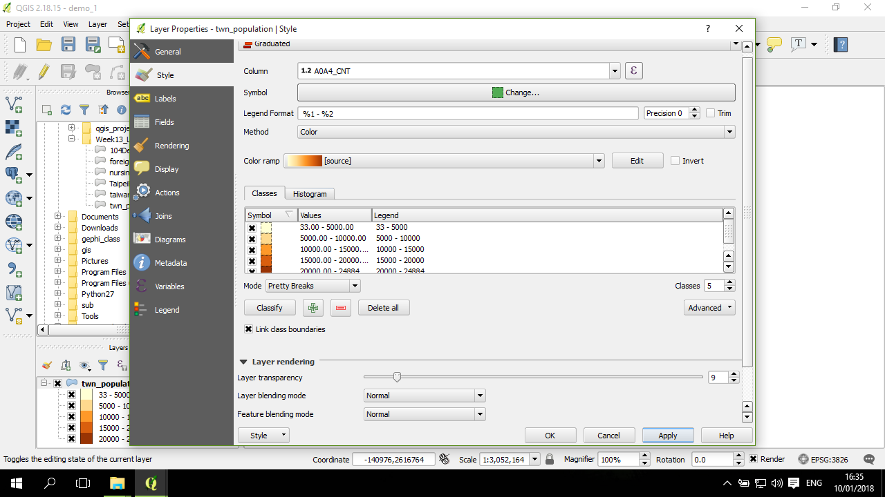

分層設色圖 (choropleth)
分層設色圖 (面量圖) 是一種對於面資料的地圖呈現方式，其概念是把數值根據分層，以不同的顏色(通常為漸層色) 塗到各個面物件(polygon) 上，以呈現每一個面的該數值的高低，例如將台灣的人口密度分成五層，繪製分層設色圖來觀察最高或最低的那一層主要都集中在哪裡。
資料觀察
本次教學將用 twn_population.shp(點擊下載) 這個圖層作說明，是一個全臺灣鄉鎮面資料圖層：
進行分層設色繪製
進入第二個分頁 (Style)，在點開第一個下拉選單(預設為 Single symbol選項)：
在下拉選單中，選 Graduated (漸層)：

在 Column 中，選取所要繪製的欄位(例如，繪製0-5歲年齡的人口數)；然後在中間的空白區塊下方的 Mode 選所要進行「分層」的模式，這裡舉 Pretty Breaks 為例，預設是 Equal Interval，這些都是分層的方法；然後點 Classify ， 中間的 Classes 會出現分好層的結果：
這裡預設是用藍色進行漸層色的呈現，透過 Color ramp 的下拉選單可以選取適當及偏好的漸層色組：
選好顏色後，分層的顏色也設定好了；確定設定好後，點 Apply 套用，然後點 OK 返回主畫面：
加入上層分區邊界
上述的分層設色圖是鄉鎮分區的結果，但有時候這圖看起來會很複雜，如果能加上縣市邊界(點擊下載)輔助呈現地圖，可以讓讀者更容易的看出有意義的分佈型態。
要加入縣市分區，就需要設定不同的分區用不同的分區邊界來呈現。
所以第一步是回到上述分層設色的視窗，點 Symbol 右邊的按鈕(Change...) ，然後在跳出來的小視窗，設定鄉鎮層級的面的樣式，例如這裡將其邊界改用虛線來呈現：

在 Outline style 從 Solid Line 改成 Dash Line。
按 OK 後，回到設定頁面，這時候可以看到分層的顏色的邊框是改成虛線，點套用讓設定套用到地圖上：

將縣市圖層加到圖層列表中：
預設是某一中顏色，在圖層列表中，確認這圖層是在鄉鎮圖層的上面，在地圖上才會疊在原來的圖層上面，如上圖。
接下來需要作的是將這個圖層的顏色設定成無色。來到這個圖層的 Properties-->Style。預設是 Single symbol，畫面原來是停留在 Fill ，選其下方的 Simple fill，下面的選項會隨之改成下圖的樣子；在其下方的 Fill style ，下拉選單中，從原來的 Solid 改成 No Brush：
原來的 Single symbol 頁面右上方的圖示已轉成空心只有邊框的型態，點套用(Apply)及OK：
地圖這時候就修改好了，縣市邊界也已套疊完成；不過，縣市的邊界似乎有些太細：
如果需要進一步修改邊框粗細，也可以在前面的那個界面，透過 Outline style 底下(需要把界面往下拉) 的Outline width 中增加邊界的厚度，例如下圖加大到 0.5mm 的厚度：
分層設色圖也就畫好了。